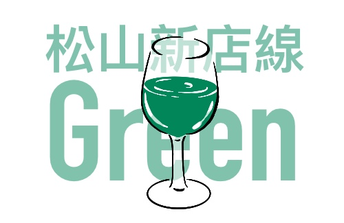
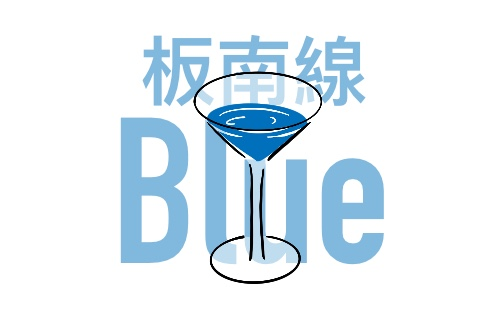
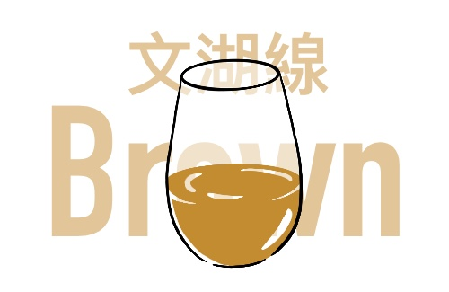

松山新店線
Green Line
松山新店線，路線代號為G，路線代表色為綠色。起自新北市新店區新店站，迄於台北市松山區松山車站。
淡水信義線
Red Line
淡水信義線，路線代號為R，路線代表色為紅色。起自新北市淡水區淡水站，迄於台北市信義區象山站。
中和新蘆線
Orange Line
中和新蘆線，路線代號為O，路線代表色為橘色。起自新北市新莊區迴龍站以及新北市蘆洲區蘆洲站，迄於新北市中和區南勢角站。

板南線
Blue Line
板南線，路線代號為BL，路線代表色為藍色。起自新北市土城區頂埔站，迄於臺北市南港區南港展覽館站。

文湖線
Brown Line
文湖線，路線代號為BR，路線代表色棕色。起自臺北市南港區南港展覽館站，迄於台北市文山區動物園站。